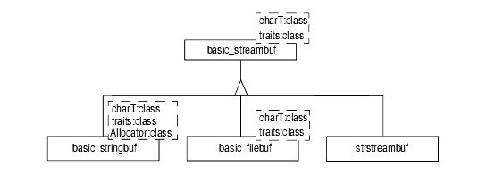

Stream buffers provide the transport and character code conversion capabilities of the C++ Standard Library iostreams. A stream buffer serves as a source and/or sink for the formatting layer represented by the streams themselves. The buffer in turn sends characters on to a file or stores them directly in a string, memory array, or some other destination; it also receives characters from strings, memory arrays, and files. A stream buffer need not handle both input and output, however; it may specialize in read operations or write operations. A stream buffer might also alter or manipulate data in some appropriate way, as we'll see in Section 39.2 when we derive a new stream buffer class.
As with streams, stream buffers are organized in an inheritance hierarchy, albeit a much simpler one. To refresh your memory, Figure 36 below repeats the inheritance hierarchy given previously in Figure 26:

basic_streambuf provides the base abstraction for a one-dimensional character array with theoretically unlimited capacity. All other stream buffers derive from this class template. basic_streambuf also defines the basic interface between streams and stream buffers. Much of this interface delegates implementation to a set of protected virtual functions that allow derived classes to determine how things actually work. While these functions in basic_streambuf all have default behavior, a basic_streambuf object is not itself useful for a transport layer, since it doesn't provide a public constructor. Instead, a more specific kind of stream buffer is derived from the basic_streambuf base.
As shown in the inheritance hierarchy, the iostreams facility defines three different derived stream buffers. These three are used respectively for controlling input/output to files, strings, and character arrays in memory:
basic_filebuf provides a transport layer for interfacing streams with files.
basic_stringbuf provides a transport layer for interacting directly with strings in memory.
strstreambuf allows writing to and reading from character arrays.
Each of these derived stream buffers implements behavior specific to its task, and extends the streambuf interface to accommodate the specific needs of its source/destination. For instance, basic_filebuf defines open() and close() member functions for performing those operations on an underlying file, and basic_stringbuf defines a str() member function that returns a copy of the underlying string.
Every stream buffer implements a character array in memory that represents a portion of the data passing through the stream--the portion that is currently buffered. The buffer maintains both a put area, which contains buffered characters written to the stream, and a get area, which contains buffered characters available for reading. Either of these may be empty, depending on the type of stream (that is, read or write only), or the stream state (for example, at the end of a file).
When the put area becomes full and a pending operation would cause it to overflow, the characters in that area are written out using the protected virtual function overflow(). When the get area is emptied, a new set of characters is read in using the protected virtual function underflow(). In this way the actual reading and writing of characters is delegated to a derived class as necessary. For example, a basic_filebuf has an implementation of overflow that writes characters out to a file, while a basic_stringbuf simply copies characters into a string whenever overflow is called.
Seeking operations and the sync operation are handled in the same way. The sync operation ensures that the state of the stream buffer and the underlying source/sink are synchronized.
basic_streambuf defines a public interface for reading, writing, seeking, querying, and localization. Most of the public functions that define this interface actually delegate to protected virtual functions so that specific behavior is implemented by derived classes. The Apache C++ Standard Library Reference Guide contains detailed descriptions of all of these functions. Meanwhile, the public interface, and the way in which functions delegate to virtual functions, is described below:
For reading:
The in_avail() member function returns the number of characters currently in the buffer that are available for reading, or an estimate of the number of characters available in the underlying source if the buffer is currently empty. If an estimate cannot be obtained, as may be the case with the standard iostream object std::cin, then this function returns -1.
The snextc() member function moves the current position forward in the buffer one character and returns the character it now points to, or returns std::char_traits<>::eof if at end of file.
The sbumpc() member function returns the character currently pointed to in the buffer, then increments the current position by one.
The sgetc() member function returns the character at the current position. This function does not change the current position.
The sgetn(char_type* s, streamsize n) member function copies up to n characters from the buffer to the character array pointed to by s. This function delegates to the protected virtual function xsgetn().
Note that the last four functions all use the protected virtual function underflow() to fetch new characters if none is currently available in the buffer.
The sungetc and dsputbackc(char_type) member functions both move the current pointer back one step if possible. If it's not possible to back up, say, because we're at the beginning of a buffer attached to stdin, then both functions return the result of calling the protected virtual function pbackfail(). The function sputback also returns pbackfail() if the previous character in the buffer does not match the function's argument.
For writing:
The sputc(char_type c) copies the character c into the buffer at the current position and increments the position. The protected virtual function overflow(c) is called if the write area is full.
The sputn(const char_type* s, streamsize n) member function delegates to the protected virtual function xsputn(). The effect is to copy up to n characters from s into the put area of the buffer and increment the write position that many times.
For positioning:
The pubseekoff() and pubseekpos() delegate to their respective virtual functions, seekoff() and seekpos(). The behavior of these is highly dependent on the type of derived stream buffer and the type of code conversion needed. See Section 30.5 on file positioning for a description of these functions with regard to basic_filebuf.
For locales:
The pubimbue(const locale&) and getloc() member functions set and get the character code conversion properties for a stream buffer; pubimbue() actually delegates to the protected virtual function imbue(). pubimbue() returns the previous locale for the stream buffer, the same locale that would have been returned by getloc() before a call to pubimbue().
Finally, basic_streambuf provides a function for setting its internal character buffer and another for synchronizing the buffer and the underlying source or sink. Function pubsetbuf(char_type*,streamsize) delegates to the protected virtual function setbuf(), and pubsync() delegates to the protected virtual function sync().
In Section 39.2 we show how to create a new kind of stream buffer by deriving from one of the existing stream buffer classes. We re-implement one of the protected virtual functions declared by basic_streambuf in order to modify the behavior of a basic_filebuf.